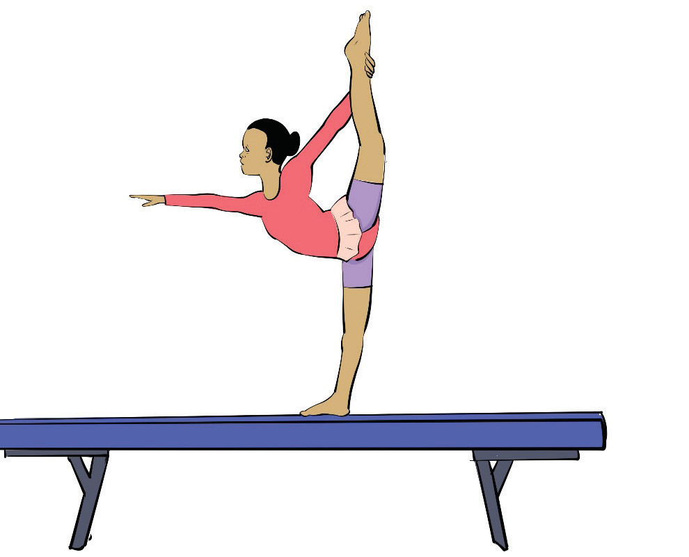

Split hold
A balance position on the beam where the gymnast splits the legs or holds a straddle, while balancing on the beam. Follow these steps to practice the split hold on the balance beam.
- (i) Warm up thoroughly to prepare muscles;
- (ii) Carefully mount/climb the balance beam using your preferred technique;
- (iii) Stand upright in the centre of the beam with your arms extended to the sides for balance;
- (iv) Take one leg forward into a controlled lunge position, keeping your back leg straight behind you;
-
(v)
Slowly slide into a split position, keeping your legs aligned with the beam and your hips square. Use your arms for balance and control;
- (vi) Tighten your core and maintain a strong upper body posture to hold the position steadily;
- (vii) Keep the split for a few seconds (start with 3–5 seconds and build up over time), focusing on form and control, Figure 4.40; and
- (viii) Gently push back up into a lunge and then return to standing, and dismount carefully.